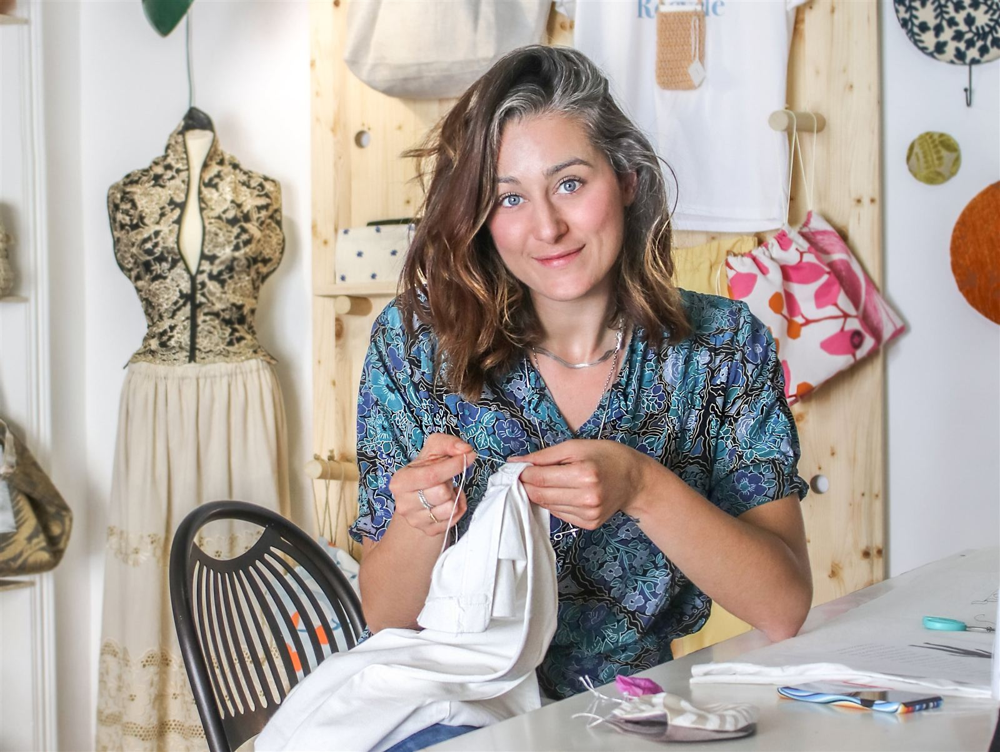

Contatti
Rimaniamo in contatto
Hai domande o curiosità? Scrivimi: leggo io ogni messaggio e ti rispondo appena posso.
- Laboratoriocampagna vicino a Regalbuto (EN)
- Lezioniin laboratorio, la posizione a chi prenota

Forse cercavi